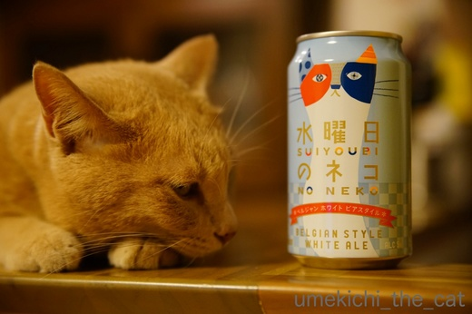
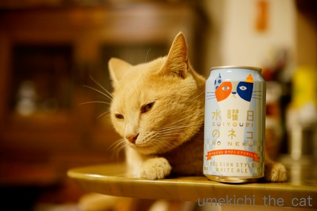
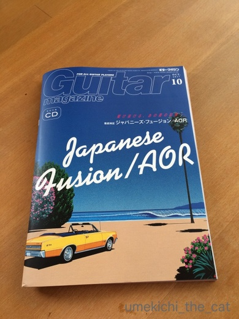
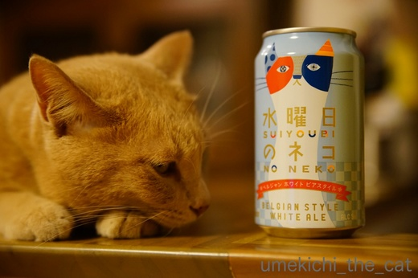
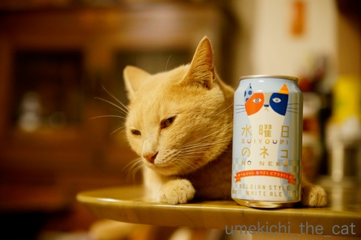
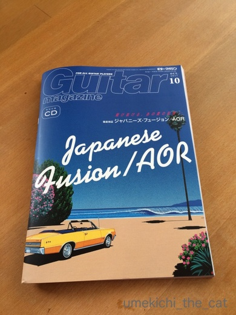

水曜日のネコ〜一度はやってみたかった〜 [梅吉]
タイトルで皆様「ああ、あれですね・・・」と想像なさったのではないでしょうか^^;
その通り！！

いくらなんでも平日の昼間っから一人宅飲みはしていませんから。
写真は先週の水曜日の夕食時のものです。ご安心くださいね＾＾

は〜い！「水曜日のネコ」と一緒に写真を撮りますよ![[カメラ]](https://blog.ss-blog.jp/_images_e/68.gif)
・・・とっても気の無さそうな水曜日のねこ。

写真を撮り続けているとものすご〜く迷惑そうな顔をして

睨まれちゃいましたヾ(*ΦωΦ)ﾉ

じゃらしを振り回したら睨んでいない目線はいただけましたが
梅吉の後ろに物干し台の脚が写っているし、ビリビリのビニール袋の上だし・・・
再チャレンジしたい！と思った水曜日のねこの写真でしたw
･゜ﾟ･*:.｡..｡.:*･゜ﾟ･*:.｡. .｡.:*･゜ﾟ･*･゜ﾟ･*:.｡..｡.:*･゜ﾟ･*:.｡..｡.:*･゜ﾟ･* ･゜ﾟ･*:.｡..｡.:*･゜ﾟ･*
前記事で「高中正義」に反応された皆様！！
ギター・マガジン10月号は「Japanese Fusion&AOR」の特集ですよ〜。
ぜひぜひ＾＾

 ↑ガブッと一押し↑
↑ガブッと一押し↑
新発売のビール、早速飲みました。
好き嫌いが分かれると思いますがこの手のフルーティーなビール、好きです！
ベルギービールやヴァイツェン好きな方オススメですよ〜。
その通り！！

いくらなんでも平日の昼間っから一人宅飲みはしていませんから。
写真は先週の水曜日の夕食時のものです。ご安心くださいね＾＾

は〜い！「水曜日のネコ」と一緒に写真を撮りますよ
・・・とっても気の無さそうな水曜日のねこ。

写真を撮り続けているとものすご〜く迷惑そうな顔をして

睨まれちゃいましたヾ(*ΦωΦ)ﾉ

じゃらしを振り回したら睨んでいない目線はいただけましたが
梅吉の後ろに物干し台の脚が写っているし、ビリビリのビニール袋の上だし・・・
再チャレンジしたい！と思った水曜日のねこの写真でしたw
･゜ﾟ･*:.｡..｡.:*･゜ﾟ･*:.｡. .｡.:*･゜ﾟ･*･゜ﾟ･*:.｡..｡.:*･゜ﾟ･*:.｡..｡.:*･゜ﾟ･* ･゜ﾟ･*:.｡..｡.:*･゜ﾟ･*
前記事で「高中正義」に反応された皆様！！
ギター・マガジン10月号は「Japanese Fusion&AOR」の特集ですよ〜。
ぜひぜひ＾＾

新発売のビール、早速飲みました。
好き嫌いが分かれると思いますがこの手のフルーティーなビール、好きです！
ベルギービールやヴァイツェン好きな方オススメですよ〜。

カフェオレ色の梅吉

梅吉 2023年8月10日 永眠


梅吉と出会った譲渡会

犬猫の理由なき殺処分ゼロ
妄想広告
UMEKICHI 光

爆発的に早い！
時々攻撃的！
Thanks to Mr.Boss365
爆発的に早い！
時々攻撃的！
Thanks to Mr.Boss365

つまらなそうに写ってる梅吉さんが可愛いです。4枚目の流し目なんか、とってもいい男。うちは下戸夫婦なので家飲みは皆無。夫婦で秋の夜長にゆったり晩酌を楽しむって素敵ですねー。大人の楽しみだわー。
by zombiekong (2017-09-27 13:17)
役者さんのように百面相ができる梅吉さん、
カワイイです。ところで商品名は何故に
「水曜日」なんでしょう？
by うっかりくま (2017-09-27 13:51)
酔っ払い相手は疲れるかな（笑
テンションの低さがお顔に表れてますね♪
by きぃ (2017-09-27 14:39)
「ネコ」って入るだけで「買ってみようかな」と思ってしまう（笑）
物干し台の脚…言わなきゃ分からなかったのに。ふ～ん物干し台の脚だったのね(￣ー￣)
by palpal (2017-09-27 15:01)
あっ、これ私も買ったことがあります＾＾
えぇ、アルコール余り飲めないのに、「ネコ」の文字についつい手を出しちゃいました^^;
梅吉さんの冷めた目が何ともｗ
by ニッキー (2017-09-27 16:05)
ビアグラスの中にもう一つグラスが入っているみたい！
おしゃれですね～♪
涼しくなるとキレが命のがぶ飲みビールをお休みしてコクや香りを楽しむビールた飲みたくなります(*^▽^*)
退屈そうな梅吉さん、”酔っ払いの相手は勘弁してにゃ！”と言ってそうです^^;
by ゆきち (2017-09-27 16:20)
3枚目の『気の無さそうな水曜日のねこ』（笑）梅吉さんにピッタリ。
4枚目、流し目の梅吉さん、協力していると思いますよ。
物干し台の脚もビリビリのビニール袋も言われなければ分からない（笑）
by kiki (2017-09-27 17:21)
梅吉さん２枚め、つまんなそーなお顔も、チャーミング。
３枚目、ちょっと興味示しているように見えますよ！
４枚目は困りつつ協力してくれてる＾＾；
by sana (2017-09-27 18:17)
梅吉さん的には迷惑でしょうね～(笑)でも一枚だけでも良いかおでお願いしたいところですね～
by みぃにゃん (2017-09-27 18:30)
水曜日のネコ
良いね〜♪癒されるわ〜^ ^
by チャー (2017-09-27 19:29)
梅吉さんビールには興味なさそうですね(^^)
by ma2ma2 (2017-09-27 20:32)
「水曜日のネコ」と梅吉さんのお写真
まるで既存の広告ポスターのよう♪
Manbo No.5とかNo.6とか、懐かしいな。
フュージョンは聴く分にはいいのですが
演奏はとても難しいです。^^;←ﾍﾞｰｽ
by yes_hama (2017-09-27 21:15)
水曜日ってネーミングはさすがです。それに癒やしの猫とは(^_^)
仕事も週半ばに休みがあると、なぜかホッとしますからね。
by kou (2017-09-28 07:45)
この缶一本でいろんな写真が撮れそうですね。
一本買っておこうかな＾＾；
by ぽちの輔 (2017-09-28 07:48)
いや〜んカワイイ(*^^*)って思うと
後ろに洗濯物やら婆の足が写っていたりするんですよねぇ(^^;
少々なら修正しちゃうんですが、おひげに被っていたりするとお手上げ(><)
ALONEが生まれて初めて買ったバンドスコアなんですよ〜。
ギターマガジンいい〜♪(^^)買わねば！
by も〜 (2017-09-28 08:08)
ふふふ、タイトルでピンときましたよ！
水曜日のねこの写真、うちもやりたくなりましたー。
買ってこようかな^^
＞平日の昼間っから一人宅飲みはしていませんから
え！そうなの！？
わたしたまに。。。。やるｗｗ
夏に多いです。暑いんだもんｗｗ
by リュカ (2017-09-28 10:14)
zombiekongさん＞流し目、いい男・・・杉良太郎？(*>艸<)
梅吉にその線、狙わせようかしら・・・
我が家は二人ともお酒好きなくせに飲むと眠くなるのー (^▽^;)
秋の夜長を楽しむ前に爆睡ですw（爆）
うっかりくまさん＞猫は表情筋が少ないらしいのですが
梅吉は百面相が得意です。
表情筋が発達していたら一体どんなことになっていたんだ！？
「水曜日」は
週の中日の水曜日ににゃんこの様にのんびりリラックスしてや〜！
という思いが込められているそうですよ＾＾
「ネコ」って付けたら猫好きが買うわね！との思惑も感じます。
そして見事に引っ掛かりましたwwwww
きぃさん＞酔っ払い相手はほぼ毎晩で嫌気がさして来たかしら^^;
時々引きこもられる事もあるんですよーーー。。。
palpalさん＞いたいたーー！！
「ネコ」って入るだけで買いたくなる私と同じ人Ｏ(≧▽≦)Ｏ
名前つける会議で「ネコって付けたら買う人おるやろ？」って
言われていそうだよね〜^^;
物干し台の足、今度言わないわー。気づいても知らんぷりしててね(^_－)☆
ニッキーさん＞あ！ニッキーさんも「ネコ」で買っちゃう方！！
マーケティング対象として「あ、狙われてる・・・」と思っても逆らえない。
お店でも下僕体質がついつい出てしまいます(*>艸<)
ゆきちさん＞このビアグラス二重構造で結露が出来ない様になっています＾＾
難点は飲み口の分厚さ。
たまに普通のピルスナーグラスで飲むと美味しい！！と思っちゃいます。。
梅吉の酔っ払いのお相手はほぼ（強調！）毎晩の事なのですが
度がすぎると厳しい目つきをされる様です^^;
でも休肝日、かまってちゃん梅吉としては物足りないんじゃないかなーって
思っています(*>艸<)
kikiさん＞本気に気の無い感じがダダ漏れですよねー(*>艸<)
缶を蹴っ飛ばしたり、いなくなったりしないのは
梅吉なりに協力してくれたのでしょう。
お礼の熱いチューをしておきましたＯ(≧▽≦)Ｏ
そうかー。次回は「写ってますけど、なにか？」で通します！！
sanaさん＞嫌だったら逃げちゃいますよね〜＾＾
「うっとおしいわ！」と思いながらも協力してくれるのは
ブログにゃんことしての心構えが出来てきているのでしょうか(*>艸<)
みぃにゃんさん＞逃げちゃわないだけでも良し。と思う事にしましたよ〜＾＾
次回は良いお顔、目指します！！
チャーさん＞そうそう♡メーカーとしては癒しビールを狙った様です。
そしてまんまとハマりました( ^ω^ ）
ma2ma2さん＞未成年ですからダメ〜〜！！(*>艸<)
yes_hamaさん＞ベーシストでいらしたのですね！
チョッパー、ビシバシですか？（今はスラップって言うのですよね？）
ジャズとフュージョンはテクニックとセンスの世界ですよね〜。
私はピアノ、ジャズは全然ダメでした〜(^▽^;)
kouさん＞「水曜日」で「ネコ」じゃなければいけないのですよね＾＾
「水曜日」で「イヌ」だと社畜っぽくて忙しそうで癒されません(*>艸<)
ぽちの輔さん＞色々使えますよ〜。
最後は飲んで楽しむことが出来るので一缶で二度美味しい！！
も〜さん＞足、ありがち過ぎます(*>艸<)
ウチの場合おっとの毛ずねだったりするのでなおさらNGですw
も〜さんは「Alone」のLPをお持ちの様ですね！！
我が家には高中さんのLP何枚あるだろう・・・数えてみます(^_－)☆
リュカさん＞水曜日のネコ缶のデザインがあおくんの毛皮の色と
とってもマッチしそう！
最後は飲んで楽しめるしね(^_－)☆
平日お昼の一人宅飲み、
お酒好きのくせに家で飲むとすぐ眠くなっちゃうのよね〜。
（外では寝ないよ！）
飲むと午後から何もできなくなっちゃうからノンアルでガマンしてます (^▽^;)
by ちぃ (2017-09-28 14:10)
水曜日の梅しゃん、とっても絵になりますよん♪
by Ginger (2017-09-28 16:25)
梅吉くんの迷惑そうなお顔が、「今日は飲みたい気分」に見えちゃう。
何があったんだろ！あはは
猫柄、猫フォルム。なんでも気になるよね。
目が行っちゃうからつい買っちゃう。たとえ使わないものでね・・・(^^;
by emi (2017-09-28 16:48)
梅吉さんも一緒に飲めたらいいのにネ！
by じゅらまろ (2017-09-28 17:06)
だんだん目が開いてくる梅吉君の顔が面白いわぁฅˆ•ﻌ•ˆฅ♬
逆に見ると「さぁ飲むにゃ！」から、「美味しくて飲み過ぎたにゃ…」な梅吉君、もしかしたら、ちぃさんは飲めば飲むほど目が開いてくるタイプ！？
by BillK-ko (2017-09-28 20:26)
ちぃさ～ん、平日の昼間っから一人宅飲みしてたって全然OKっすよ(￣▼￣*)ﾆﾔｯ
梅吉さん、やっぱりモデル代が出ないとやる気出ないよね～(笑)
背景、ワタシの部屋に比べれば何も無いに等しいですが...
（散らかったままの写真をそのまま載せちゃうワタシもどうかと思いますが...滝汗）
高中正義・・・久し振りにこの名前聞きました(^_^;)
懐かしいなぁ...って、やっぱり活動してたんですね!?
by ひでぷに (2017-09-28 23:38)
お邪魔いたします！
よなよなビール、大好きです！
表参道の直営店の入り口の壁には、このおっきなネコさんの絵があります^^
そして、ちゃんと「水曜日」に飲まれたのですね（笑）
ギタマガって、表紙が絵というイメージがなかったです。
なんだかこれ・・・FM STATIONのよう・・・（年齢ばれるぞー）
梅吉くん、アイラインがとってもおとこまえですね（*´ー｀*）
by Ja-Kou66 (2017-09-29 00:30)
Gingerさん＞「よなよな」の会社からのスカウト待ってます(*>艸<)
（私もママ友は絶対ダメな自信あります^^;
女子同士つるんでトイレ・・・っていうのが大のニガテだったし！）
emiさん＞本当だー！「きょうは のませてんか・・・ ますたー」って(*>艸<)
梅吉も飲みたい気分になることあるのかもねー。
そんな時はマタタビを！
でも梅吉普段からテンション高いせいか酔わないの^^;ザル？？
猫商品、私は極力消えて無くなるものしか買わない様にしていますw
買ったら最後増殖し続けるわ・・・
じゅらまろさん＞梅吉強そうだよねー！でも飲んだら更に絡んで来そうww
BillK-koさん＞途中睨んでるのは酔っ払って目が座ってる感じがするー(≧▽≦)
私はお酒好きなくせに飲むと眠くなる人。（外では寝ませんよー。）
目を開いていることが出来ませぬ(^▽^;)
人に絡んだりしないだけ良いよね？？
ひでぷにさん＞よっしゃーーー！！ひでぷにさんの許可をもらったわ！！
今度飲んじゃおうかなー。
猫の写真の背景はお互い何もない、という事にしましょうか。
というかこのブログ見てくださっている方全員にお願いしたいです(^_－)☆
Ja-Kou66さん＞梅吉を見にきてくださってありがとうございます＾＾
梅吉、おとこまえでしょー(^_－)☆（親バカなんです！！）
よなよな直営店はオシャレエリアにあるんですねー。
樽生も飲めたりするのかしら？行って見たいわ！！
「水曜・・」も良いですが「僕ビール、君ビール」も好きなのです。
ギタマガはギターがド〜ン、ギター抱えたアーティストがバ〜ンの
イメージですよね。
が、今回はJapanese FusionとAORなので80年代の空雰囲気にしたかったのでしょうか。
鈴木英人、永井博・・・鉄板ですよね！ふふふ、おそらく同世代！！！！！
by ちぃ (2017-09-29 17:40)